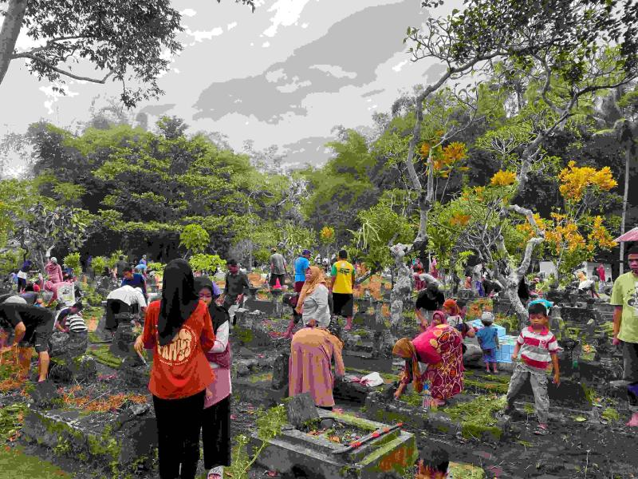
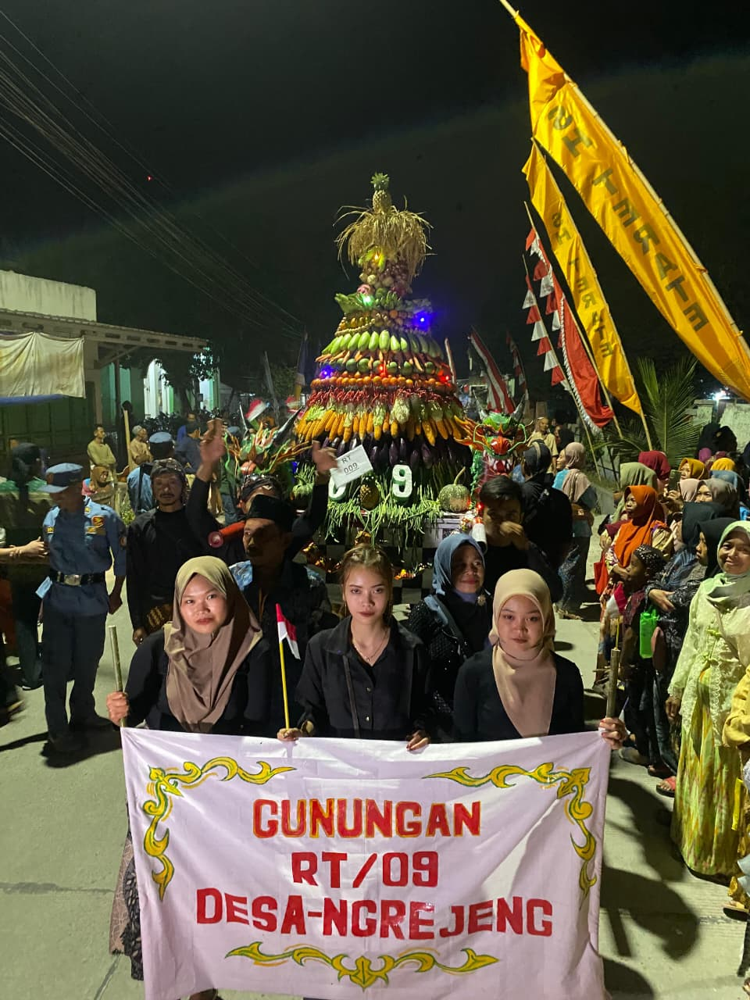
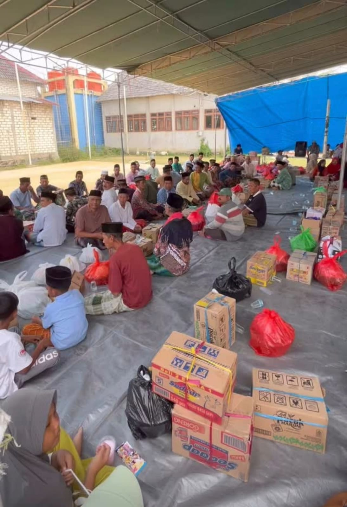
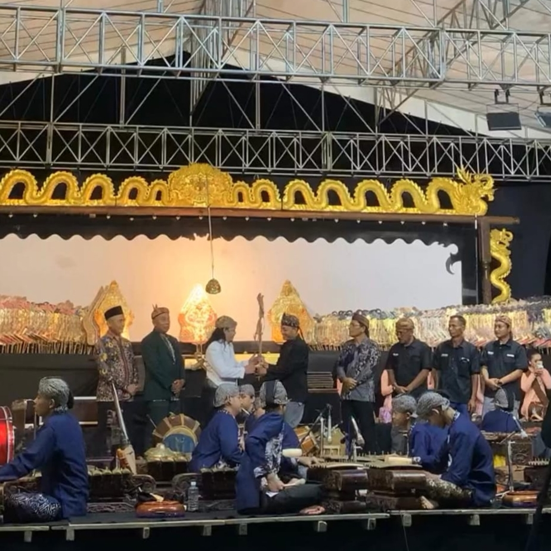

Tradisi Sedekah Bumi.
Adalah sebuah tradisi adat dan budaya masyarakat Nusantara—khususnya di Pulau Jawa—yang dilakukan sebagai bentuk rasa syukur kepada Tuhan Yang Maha Esa atas limpahan rezeki dan hasil bumi dari alam.
0+
Pulau Indonesia
0
Provinsi
0+
Suku Bangsa

Sejarah & Filosofi Sedekah Bumi
Berakar dari peradaban agraris kuno Nusantara yang memandang alam bukan sekadar objek eksploitasi, melainkan sumber kehidupan yang harus dihormati.
Latar Belakang Sejarah & Akulturasi
Tradisi sedekah bumi terbentuk melalui perpaduan tiga fase peradaban di Nusantara, khususnya di tanah Jawa, yang selaras dengan nilai spiritual dan kearifan lokal.
Filosofi Hamemayu Hayuning Bawana
Di balik tumpukan hasil panen dan nasi tumpeng, tersimpan pandangan hidup untuk menjaga kelestarian alam semesta sebagai wujud syukur kepada Tuhan Yang Maha Esa.
Gotong Royong & Harmoni Sosial
Secara sosiologis, sedekah bumi berfungsi sebagai "mesin sosial" yang merawat ikatan komunal dan kerukunan masyarakat desa melalui partisipasi aktif setiap tahapannya.
Rangkaian Prosesi Sedekah Bumi
Berlangsung secara runtut dari tahap pembersihan lingkungan hingga puncaknya berupa doa bersama dan pesta rakyat.
Tahap Persiapan & Bersih Desa (Gugur Gunung)
Dilakukan beberapa hari sebelum acara puncak sebagai simbol penyucian lingkungan fisik dan batin warga desa secara bergotong royong.
Kirab Budaya & Arak-Arakan Hasil Bumi
Pembuka acara puncak yang paling meriah dan sarat simbolisme visual melalui arak-arakan gunungan hasil panen masyarakat.
Prosesi Puncak: Kenduri & Doa Bersama (Kembul Bujana)
Inti spiritual sedekah bumi ketika seluruh arak-arakan berkumpul di satu tempat untuk berdoa dan makan bersama tanpa sekat status sosial.
Penutup: Pagelaran Seni & Hiburan Rakyat
Ungkapan kegembiraan bersama melalui pertunjukan seni tradisional seperti wayang kulit, ketoprak, atau tayuban hingga larut malam.
Ragam Daerah Sedekah Bumi
Hadir dengan nama, bentuk persembahan, dan kesenian pengiring yang beragam menyesuaikan kondisi geografis serta akulturasi budaya setempat.
Jawa Timur
Sangat kental dengan nuansa kesenian rakyat yang dinamis (seperti Reog, Ludruk, atau Tayub) serta tradisi pelestarian sumber mata air desa.
Jawa Tengah & DI Yogyakarta
Prosesi adat cenderung terstruktur dengan simbolisme keraton, kirab gunungan hasil bumi, serta penghormatan terhadap keseimbangan gunung dan laut.
Jawa Barat & Banten
Dikenal sebagai Seren Taun, rasa syukur berpusat pada siklus tanam padi (pare) dan penghormatan kepada Nyi Pohaci Sanghyang Asri.
Dokumentasi Sedekah Bumi
Kumpulan arsip foto kegiatan adat, kirab hasil bumi, doa bersama, dan kesenian rakyat.

Gugur Gunung & Persiapan
Gotong royong warga menjelang acara

Kirab Hasil Bumi
Arak-arakan gunungan hasil panen

Kenduri & Doa Bersama
Prosesi puncak rasa syukur warga

Pagelaran Seni Rakyat
Kesenian tradisional penutup acara